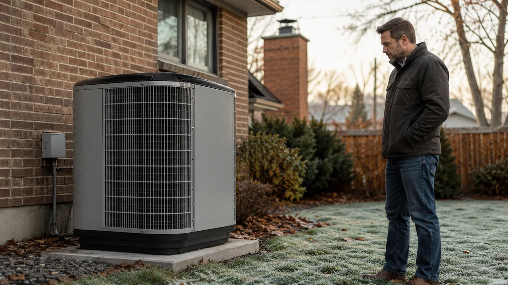

Advertising Disclosure: This site may receive compensation for service connections made through this page. Content is editorially independent.
A heat pump replaces both your AC and furnace with one system, runs 20–40% cheaper than a gas furnace in mild and moderate climates, and eliminates indoor combustion. 2026 cost: $4,000–$9,000 for a standard ducted system, $1,800–$5,000 per zone for ductless mini-splits, $8,000–$18,000 for cold-climate models. Federal Section 25C tax credit ended Dec 31, 2025 (OBBBA) — state HEAR rebates (up to $8,000 for income-qualified households) and utility rebates remain. Modern cold-climate heat pumps maintain full capacity to 5°F. The honest decision depends on your local electricity-to-gas rate ratio, climate zone, and whether you're replacing a dying AC + furnace at the same time. This is general guidance, not tax advice — consult a qualified tax professional for your specific situation.
If you're reading this, you're considering one of the largest home-equipment decisions you'll make this decade — a $4,000 to $18,000 system that handles both heating and cooling for the next 12 to 18 years. The 2026 reality is more nuanced than either side of the heat-pump debate admits: the technology genuinely improved between 2020 and 2025, but the federal tax incentives that made the math compelling in 2023-2024 partially expired on January 1, 2026. This guide is the honest framework — what a heat pump actually costs, when it makes sense for your climate, what the rebate landscape looks like after the One Big Beautiful Bill Act (OBBBA), and the eight specific questions to ask any installer who quotes you.
Cost figures throughout are sourced directly from our 2026 HVAC Cost Guide — the canonical pricing reference for the site. If you're weighing the broader heat-pump-vs-gas-furnace decision, see our heat pump vs. gas furnace comparison. For the strategic repair-or-replace framework that comes before any replacement decision, see the repair-or-replace decision framework.
What Is a Heat Pump? (And Why It Matters in 2026)
A heat pump is an electric HVAC system that moves heat between indoors and outdoors using a refrigerant cycle — the same physics as a refrigerator or air conditioner, but reversible. In summer, it pulls heat out of your home and dumps it outside (cooling). In winter, it pulls heat from outside air and pumps it inside (heating). One machine, two seasons, no combustion.
Heat pumps don't create heat by burning fuel — they move it, which takes far less energy. Per the U.S. Department of Energy, modern heat pumps deliver 200-400% efficiency (2-4 units of heat output per unit of electricity input). A gas furnace can never exceed 100% (best AFUE caps near 98%) because chemical energy is the ceiling.
Three things changed between 2020 and 2026 that made heat pumps mainstream:
- Cold-climate technology matured. Pre-2020 units lost most capacity below 30°F. Modern cold-climate models hold full capacity to 5°F and operate to -15°F.
- Refrigerant transition. The AIM Act phased down R-410A in favor of lower-GWP refrigerants (R-454B GWP 466, R-32 GWP 675). Equipment manufactured after Jan 1, 2025 must use these; new installations after Jan 1, 2026 must too.
- Incentive landscape. The IRA expanded Section 25C to $2,000/year for heat pumps in 2023-2025. OBBBA terminated that credit for 2026 installations (Public Law 119-21, signed July 4, 2025). State HEAR rebates and utility rebates remain.
The 2026 Cost Reality: Equipment, Installation, Operating
Before you compare options, anchor on what each system actually costs in 2026. Sourced from our canonical cost guide:
| System Type | Installed Cost Range | Best For |
|---|---|---|
| Standard Ducted Heat Pump (3 ton) | $4,000–$9,000 | Most U.S. homes with existing ductwork in mild-to-moderate climates |
| Cold-Climate Ducted Heat Pump | $8,000–$18,000 | Zone 5+ winters; needs to maintain capacity below 20°F |
| Ductless Mini-Split (1 zone) | $1,800–$5,000 | Single-room additions, garages, homes without ductwork |
| Multi-Zone Mini-Split (3-zone) | $5,000–$12,000 | Whole-home conversion without installing ductwork |
| Geothermal (Ground-Source) Heat Pump | $15,000–$35,000 | Long-term homeowners; large lots; coldest climates |
| Ductwork Modification (if needed) | $500–$2,500 | Right-sizing existing ducts for new heat pump airflow |
| Manual J Load Calculation | $200–$500 | Required for proper sizing — should be in every quote |
Estimated 2026 ranges. Actual costs vary by region, system size, electrical capacity, and provider. After-hours installation adds $200–$500.
Operating cost depends on your local electricity-to-gas rate ratio. At U.S. average rates (~$0.165/kWh, ~$1.55/therm) with typical efficiencies (COP 3.0, AFUE 96%), gas wins by ~14%. But this is highly local — in Eugene or Portland, OR (cheap hydro), heat pumps win by 30-40%; in Oklahoma City with cheap gas, gas wins by similar margins. Full math: heat pump vs gas furnace.
The 6 Decision Factors That Determine If a Heat Pump Fits Your Home
Six questions. Skip any one and you're guessing.
1. What's your climate zone?
Heat pumps shine in zones 1-4. They work in zones 5-6 with cold-climate models. Zone 7+ usually wants dual-fuel (heat pump + gas furnace backup). DOE's Building America climate-zone map shows where you sit.
2. What's your electricity-to-gas rate ratio?
Cost-per-million-BTU: heat pump = (electricity rate per kWh) ÷ (COP × 0.293); gas furnace = (gas rate per therm) ÷ (AFUE × 0.1). Below $0.15/kWh + above $1.50/therm: heat pump wins. Above $0.20/kWh + below $1.20/therm: gas wins.
3. Are you replacing AC AND furnace at the same time?
One heat pump replaces both. If both systems are over 12 years old and within 3 years of each other in age, combined replacement is 15-25% cheaper than two separate systems. If only one is dying, see our repair-or-replace framework.
4. Is your electrical service adequate?
Most modern homes have 200-amp service (fine for a heat pump). Pre-1990 homes sometimes have 100-amp service that may need a $1,500-$3,500 upgrade — especially with auxiliary electric resistance heat. Your installer's load calc should flag this.
5. Do you have ductwork?
Existing ducts: ducted heat pump replaces the furnace and reuses ducts. No ducts (or undersized/damaged): ductless mini-split is usually simpler and cheaper than installing new ducts.
6. How long are you staying?
Operating-cost payback runs 5-10 years. Selling in 2: the math shifts — you don't capture the savings. Staying 10+: the heat pump usually wins. Most installers skip this question; you shouldn't.
Get connected with a technician in your ZIP code for a Manual J load calculation and itemized quote.
Call Now — (844) 582-1795Disclosure: We are a referral service and may receive compensation for qualified calls. Calls may be routed to an independent provider network and may be recorded. Pricing and availability vary by provider and location.
Heat Pump Types Compared: Ducted, Ductless, Geothermal, Cold-Climate
"Heat pump" is a category, not a single product. Four major types:
Ducted (Standard Air-Source) Heat Pump
One outdoor unit + indoor air handler, connected to existing ductwork. $4,000-$9,000 installed. Best for: most zone 1-4 homes with existing ducts. Variable-speed models use roughly 30% less electricity per season than single-stage units that cycle on/off.
Cold-Climate Heat Pump (Air-Source, Enhanced)
Inverter compressor + vapor injection holds heating capacity to 5°F or below (ENERGY STAR requires 70%+ of rated capacity at 5°F). $8,000-$18,000 installed. Best for: zone 5-6 climates. Premium brands: Mitsubishi Hyper-Heat, Daikin Aurora, Lennox SunSource, LG ENERGY STAR Cold-Climate.
Ductless Mini-Split Heat Pump
One outdoor unit + 1-8 wall/ceiling-mounted indoor heads. No ductwork required. $1,800-$5,000 per zone; $5,000-$12,000 for 3-zone whole-home. Best for: no-duct homes, additions, garages, zoned setpoints. Avoids the 20-30% loss typical ducts cost.
Geothermal (Ground-Source) Heat Pump
Uses the earth's stable underground temperature instead of outdoor air. $15,000-$35,000 installed (the buried loop is the expensive part). Best for: long-term homeowners, large lots, coldest climates. Highest efficiency (COP 3-5 year-round) and 50+ year loop lifespan, but very high upfront cost and significant lot space required.
2026 Incentives: HEAR, Utility Rebates, and OBBBA's Impact
Most heat-pump articles still online cite the federal Section 25C credit as a major financial argument. That credit is gone for 2026 installations. The One Big Beautiful Bill Act (Public Law 119-21, signed July 4, 2025) terminated 25C for property placed in service after December 31, 2025, per the IRS Section 25C page. The companion Section 25D credit ended the same date. If installed by Dec 31, 2025, you may still claim 25C on your 2025 return (Form 5695, up to 30% of cost capped at $2,000 for heat pumps). For 2026 installs, the federal route is closed.
What's still available in 2026:
- State Home Electrification and Appliance Rebates (HEAR) — formerly proposed as HEEHRA, the rolled-out program is uniformly called HEAR. IRA-funded, administered by each state's energy office. Heat pump rebate up to $8,000 for households at or below 80% Area Median Income; program-wide cap $14,000 across all electrification upgrades. Reduced rebates at 80-150% AMI; not eligible above 150%. Rollout is staggered — check your state energy office.
- Utility rebates — many electric utilities offer $200-$1,500+ on high-efficiency heat pumps (PG&E, ConEd, TVA, Duke Energy, etc.). The DSIRE database is the national clearinghouse.
- State-level credits — MA, NY, VT, ME layer $1,500-$5,000 on top of HEAR for cold-climate adoption.
Honest framing: do the math without counting on federal credits in 2026; treat any state/utility rebate as a bonus. Vendors who lead with "$8,000 back from the government" are quoting pre-2026 reality. This is general guidance, not tax advice; consult a qualified tax professional and your state energy office for your specific situation.
Cold-Climate Performance: Do Heat Pumps Really Work Below Freezing?
Yes — modern cold-climate heat pumps maintain full heating capacity to 5°F without auxiliary heat, and operate effectively to -15°F or lower with backup electric resistance heat. The "heat pumps don't work in cold weather" misconception comes from pre-2020 technology that struggled below 30°F.
Three advances changed this: inverter-driven variable-speed compressors that modulate continuously and spin faster in cold weather; vapor injection technology (EVI) that boosts low-temperature capacity by 30-50%; and on-demand defrost management that reduces time spent in defrost mode.
"Cold-climate" in a quote means the unit meets ENERGY STAR's requirement of maintaining at least 70% of rated capacity at 5°F. Leading brands in 2026: Mitsubishi Hyper-Heat, Daikin Aurora, Lennox SunSource Climate-IQ, Carrier Greenspeed Intelligence, LG ENERGY STAR Cold-Climate. Cost premium: $2,000-$5,000 over standard heat pumps.
Below the unit's rated minimum, either auxiliary electric resistance heat kicks in (COP ~1.0, expensive for extended cold) or — in dual-fuel hybrid setups — a backup gas furnace takes over the deep-cold edge while the heat pump handles 80-90% of heating hours. For Cheyenne, WY or zone 6+ Northeast cities, dual-fuel is often optimal. For Winston-Salem, NC or Oklahoma City, a standard or cold-climate heat pump alone usually suffices.
Climate Sweet Spots: Where Heat Pumps Win Hardest
The math shifts noticeably based on outdoor temperature distribution and local utility rates.
- Pacific Northwest (Eugene, Portland, Seattle): clearest wins. Mild winters, cool summers, hydro electricity at $0.10–$0.13/kWh. Standard heat pump beats gas by 30–50% on operating cost.
- Mid-Atlantic / Southeast (Winston-Salem, Charlotte, Atlanta, Nashville): mixed-humid climates with brief sub-freezing spells. Heat pumps fully replace AC + furnace, eliminating gas service. Beats gas by 15–30%.
- South-Central (Oklahoma City, Dallas, Memphis): heat pumps work well, but very cheap regional gas can keep furnace economics competitive. Run the rate math.
- Mountain West (Cheyenne, Denver, Salt Lake City): cold-climate model or dual-fuel territory. Subzero nights stress standard units.
- Northeast / Upper Midwest (zone 6+): cold-climate models are the only viable full-conversion option. MA, NY, VT, ME often layer $1,500–$5,000 in extra rebates on top of HEAR.
- Hot-dry (Phoenix, Las Vegas, Tucson): heat pumps work fine but heating use is minimal — limited advantage unless the furnace is also dying.
Browse local providers in North Carolina, Oregon, or any of our 115 service areas.
Before You Sign: 8 Questions to Ask Every Heat Pump Quote
A five-figure install deserves five-figure scrutiny. If an installer refuses to answer any one of these, get a second quote.
- Did you perform a Manual J load calculation? Required for proper sizing per ACCA. "A 3-ton replaces a 3-ton" skips this — and the existing system may have been mis-sized originally.
- What is the AHRI Certified rating? AHRI publishes verified SEER2 and HSPF2 numbers. They must be on the certificate, not just the brochure.
- What refrigerant? R-454B or R-32 in 2026 (R-410A only if it's last-of-stock 2025 inventory). Get it in writing.
- Is the technician EPA Section 608 certified? Required for any refrigerant work. Ask for the certification ID.
- Manufacturer warranty AND labor warranty? Typically 5-10 years parts, 10 years compressor on premium brands; 1-2 years labor from installer. Check whether annual maintenance is required to keep the manufacturer warranty valid (most do).
- Itemized quote breakdown. Equipment / labor / duct mods / electrical / refrigerant charge / permits / commissioning. Lump-sum quotes hide markups.
- Which rebates apply, and who handles the paperwork? Installer should know HEAR status, utility programs, and local incentives. Get the rebate amount in writing.
- Post-install commissioning process? Refrigerant charge verification, airflow measurement, combustion analyzer (dual-fuel). "We'll come back if there's a problem" is a flag.
When NOT to Get a Heat Pump (Honest Disclosure)
Five scenarios where a heat pump is the wrong call:
- Very cheap natural gas. Sub-$1.00/therm gas plus $0.18+/kWh electricity makes a high-efficiency gas furnace unbeatable. Common across zone 5+ Midwest municipal-gas territories.
- Deep-cold climate without budget for a cold-climate model. Standard heat pumps in zone 6+ lean heavily on expensive auxiliary resistance heat below 30°F. If the $2,000-$5,000 cold-climate premium isn't in budget, dual-fuel or staying with gas is smarter.
- Furnace under 8 years old at AFUE 95%+. Replacing a young efficient furnace doesn't pay back. Replace the AC alone now and plan the heat pump for when the furnace dies.
- Selling within 2 years. Modest resale lift (~$3,000-$5,000) doesn't recoup full installed cost on a quick sale.
- 100-amp service with no affordable upgrade path. A $1,500-$3,500 service upgrade plus the heat pump install can push the project out of budget.
If any of these apply, see our heat pump vs gas furnace comparison for the full math, or the repair-or-replace framework if your existing system is the trigger for this decision.
Deep-Dive Guides for Specific Heat Pump Topics
This buyer's guide is the strategic overview. For specific scenarios:
- Heat Pump Not Working? Repair Costs & Fixes — the diagnostic walkthrough when a heat pump stops working
- Heat Pump vs. Gas Furnace: Cheaper to Run? — the full operating-cost math by climate
- The Repair-or-Replace Decision Framework — before any replacement decision, confirm replacement is the right call
- The 2026 HVAC Cost Guide — canonical pricing reference for every replacement and repair line item
- The Year-Round HVAC Maintenance Playbook — the maintenance schedule that maximizes heat pump lifespan
- HVAC Financing Options — how to fund a heat pump installation in 2026
- Why Refrigerant Leaks Cause AC Ice — the refrigerant-side issues that affect heat pumps too
Trusted Industry Sources
Guidance here is consistent with:
- U.S. Department of Energy — Heat Pump Systems
- ENERGY STAR — Air Source Heat Pumps
- EPA Section 608 — Refrigerant Handling Regulations
- EPA — AIM Act Technology Transitions Program
- IRS Section 25C — for 2025 tax-year filings (terminated for 2026 installs)
- DSIRE Database — State, Utility & Local Incentives
A technician can perform a Manual J load calculation and walk you through your options.
Call Now — (844) 582-1795Disclosure: We are a referral service and may receive compensation for qualified calls. Calls may be routed to an independent provider network and may be recorded. Pricing and availability vary by provider and location.
Frequently Asked Questions
For most U.S. climates, yes. A modern heat pump replaces both your AC and your furnace with one system, typically operates 20 to 40 percent cheaper than a gas furnace in mild and moderate climates, and eliminates indoor combustion (no CO risk from your heating system). The two scenarios where a heat pump is NOT worth it: deep-cold climates with cheap natural gas where the operating-cost math still favors gas, and homes without adequate electrical service to support heat-pump auxiliary heat in deep cold. The math depends on your local electricity rate, gas rate, and climate zone. Per the U.S. Department of Energy, heat pumps can deliver 200 to 400 percent efficiency (COP 2.0 to 4.0), meaning 2 to 4 units of heat per unit of electricity input — physics that gas furnaces (max ~98 percent AFUE) cannot match.
Per the canonical 2026 cost guide: a standard ducted heat pump system runs $4,000 to $9,000 installed (average $5,800). A ductless mini-split system runs $1,800 to $5,000 per zone installed (average $3,200). Cold-climate heat pumps (Mitsubishi Hyper-Heat, Daikin Aurora, etc.) run $8,000 to $18,000 installed for full systems. Geothermal systems run $15,000 to $35,000 due to ground-loop installation. Add $500 to $2,500 for ductwork modifications if needed. After-hours emergency installation adds a $200 to $500 surcharge. These are estimated 2026 ranges based on industry data — actual costs vary by region, system size, and provider.
Modern cold-climate heat pumps maintain full heating capacity down to about 5°F outdoor temperature without auxiliary heat, and operate effectively to -15°F or lower with backup electric resistance heat. The U.S. Department of Energy notes that cold-climate heat pump technology has advanced significantly since 2018; pre-2020 units that struggled below 30°F are no longer the norm. In subzero climates like northern Wyoming or upper Minnesota, dual-fuel systems (heat pump above 30°F, gas furnace below) are often the optimal balance because operating-cost economics shift in favor of gas at extreme cold.
No. The federal Section 25C Energy Efficient Home Improvement Credit was terminated for property placed in service after December 31, 2025 by the One Big Beautiful Bill Act (Public Law 119-21, signed July 4, 2025). The companion Section 25D Residential Clean Energy Credit ended the same date. Heat pumps installed in 2026 do not qualify for the federal credit. The Home Electrification and Appliance Rebates (HEAR) program — funded by the Inflation Reduction Act and administered by each state's energy office — may offer up to $8,000 toward income-qualified heat pump installation in participating states (program-wide cap up to $14,000 for households under 80% AMI). Check your state energy office for current availability. This is general guidance, not tax advice; consult a qualified tax professional for your specific situation.
Modern heat pumps typically last 12 to 18 years with proper maintenance. The compressor is the limiting component — heat pumps run more hours per year than AC-only systems (heating + cooling) so the compressor curve is shifted earlier than a comparable AC. Ducted systems average 14 to 18 years. Ductless mini-splits average 15 to 20 years (less stress on smaller compressors). Geothermal heat pumps last 20 to 25 years on the indoor unit and 50+ years on the buried ground loop. Coastal salt-air climates push lifespans toward the lower end. Per the year-round HVAC maintenance playbook, properly-maintained units routinely hit the upper end while neglected units fail at 60 to 70 percent of expected life.
It depends on local utility rates and climate. In mild and moderate climates with electricity at or below the U.S. average and natural gas above the U.S. average, a modern heat pump is typically 20 to 40 percent cheaper to run per heating season. In deep-cold climates (zone 6+) or where natural gas is significantly cheaper than electricity, a high-efficiency gas furnace often wins on operating cost. The honest math requires plugging your actual local rates into a coefficient-of-performance comparison: heat pump cost per million BTU = (electricity rate per kWh) ÷ (COP × 0.293), gas furnace cost per million BTU = (gas rate per therm) ÷ (AFUE × 0.1). See the full heat pump vs. gas furnace comparison for the breakdown by climate.
No. Ductless mini-split heat pumps mount indoor units directly on walls or ceilings and connect to an outdoor unit through a small refrigerant line set; no ducts required. Mini-splits are ideal for: homes built without ductwork (older homes, additions, garages), homes with damaged or undersized ducts where replacement would be expensive, and zoned heating/cooling needs where different rooms need different temperatures. Ducted heat pumps replace the existing furnace and use existing ductwork. Mini-split installation runs $1,800 to $5,000 per zone; whole-home ducted heat pump $4,000 to $9,000.
SEER2 (Seasonal Energy Efficiency Ratio version 2) measures cooling efficiency. HSPF2 (Heating Seasonal Performance Factor version 2) measures heating efficiency. Both became mandatory testing standards on January 1, 2023, replacing the older SEER and HSPF metrics. The 2 versions use more realistic test conditions and produce slightly lower numbers (a SEER 16 unit is about SEER2 15.2). For heat pumps, both ratings matter because the same machine handles both seasons. Federal minimums under SEER2: 14 (SEER2 13.4) in northern states, 15 (SEER2 14.3) in southern states. Heat pumps for ENERGY STAR certification typically need SEER2 15+ and HSPF2 8.5+.
In most U.S. climates, yes. A properly-sized heat pump handles both heating and cooling year-round, eliminating the gas service entirely if the home converts. Two scenarios where a heat pump should NOT fully replace the furnace: (1) climates with sustained subzero winters where dual-fuel makes more sense (heat pump above 30°F, gas furnace below); (2) homes with extremely cheap natural gas where the operating-cost math still favors gas. Most mid-Atlantic, Southeast, Pacific Northwest, and California homes can fully convert without sacrificing comfort or cost. Combined replacement (one heat pump for both functions) is also typically 15 to 25 percent cheaper than buying a separate AC plus furnace.
Heat pump capacity is measured in BTUs per hour or in tons (1 ton = 12,000 BTU/hr). The rough sizing rule for cooling is 20 BTU per square foot of conditioned space, but a proper Manual J load calculation (industry standard from the Air Conditioning Contractors of America) is required for accurate sizing — it accounts for insulation R-values, window square footage, ceiling height, climate zone, and air infiltration. Oversizing wastes money upfront and causes short-cycling that shortens lifespan. Undersizing causes the system to run at full capacity continuously and never reach setpoint in extreme weather. Any quote that doesn't include a Manual J calculation is skipping a critical step.
A typical 3-ton heat pump uses 3,000 to 5,000 watts during operation in moderate weather, dropping to 1,500 to 2,500 watts during mild conditions when the COP (coefficient of performance) is highest. Annual electricity consumption for a typical 1,800 sq ft home in a mixed-humid climate runs 5,000 to 8,000 kWh per year for heating + cooling combined. At the U.S. average residential electricity rate (~$0.165/kWh), that translates to $825 to $1,320 per year in electricity for HVAC alone. Modern variable-speed heat pumps modulate output continuously and use roughly 30 percent less electricity over a season than older single-stage units.
Modern heat pumps run between 50 and 65 decibels at the outdoor unit during operation — comparable to a quiet conversation or a refrigerator. Premium variable-speed models from Mitsubishi, Daikin, Lennox, Trane, and Carrier run 50 to 55 dB. Standard single-stage units run 60 to 70 dB. Indoor air handlers run 30 to 50 dB. Place the outdoor unit at least 3 feet from sleeping areas and consider a sound-blanket wrap if you live in a townhome with shared walls. Heat pumps are generally quieter than equivalent-capacity AC condensers because they run at variable speeds rather than cycling on/off at full power.
A cold-climate heat pump (CCHP) is a heat pump engineered specifically for cold-weather heating performance. CCHPs use enhanced compressor technology (typically variable-speed inverter compressors with vapor-injection technology) to maintain heating capacity at outdoor temperatures where standard heat pumps would lose efficiency. ENERGY STAR criteria require maintaining at least 70 percent of rated capacity at 5°F. Brands that lead this category: Mitsubishi Hyper-Heat, Daikin Aurora, LG ENERGY STAR Certified Cold-Climate, Carrier Greenspeed, and Lennox SunSource. Cold-climate models cost $2,000 to $5,000 more than standard heat pumps but are essential in zone 5 or colder climates.
Yes — with the right model. Cold-climate heat pumps installed in Minnesota, Maine, Vermont, Wisconsin, and similar zone 6 / zone 7 states maintain heating capacity to 5°F or lower without auxiliary heat. Dual-fuel systems (heat pump for moderate temperatures, gas furnace as backup for extreme cold) are common in these states because the operating-cost math shifts toward gas below about 20°F. State energy offices in cold-climate states (Minnesota, Maine, New York, Massachusetts, Vermont) often run additional rebate programs on top of HEAR specifically for cold-climate heat pump adoption, sometimes adding $1,500 to $5,000 in incentives.
New residential heat pumps installed in 2026 use either R-454B (GWP 466) or R-32 (GWP 675), both classified as A2L (mildly flammable) by ASHRAE. Under the AIM Act, EPA regulations restrict residential HVAC equipment manufactured on or after January 1, 2025 to refrigerants with GWP below 700, and new installations on or after January 1, 2026 must use these lower-GWP refrigerants. R-410A (GWP 2088), the previous standard, was phased out. R-454B has a 78 percent lower GWP than R-410A and slightly higher cooling capacity per pound. R-32 has a 65 percent lower GWP than R-410A. EPA Section 608 still legally requires technician certification for any refrigerant work.
No. Refrigerant work is federally regulated under EPA Section 608 — certification is legally required to recover, recharge, or repair sealed refrigerant lines. Heat pump installation also involves: 240-volt electrical work (requires a qualified electrician in most states); brazing copper line sets (specialized skill); vacuum pulling and refrigerant charging (requires manifold gauges and EPA certification); ductwork modification or mini-split bracketing; condensate drain installation. Improper installation voids manufacturer warranty in most cases. DIY mini-split kits sold online do exist but require technician final commissioning to be EPA-compliant and warranty-valid. Always use a qualified HVAC technician for installation.
Three filters. First, the installer must hold the appropriate state HVAC contractor credential and EPA Section 608 certification for refrigerant handling. Second, they should perform a Manual J load calculation before quoting equipment size — a quote based on square footage alone or "whatever fits the existing system" is a flag. Third, they should provide an itemized written quote separating equipment, installation labor, ductwork modifications, electrical work, and refrigerant charging. Avoid installers who push a same-day decision on a five-figure heat pump quote, refuse to walk you through the equipment specs, or claim federal tax credits are available in 2026 (they aren't — see the OBBBA section above). Cool Call Pro connects homeowners with independent technicians for these comparison quotes.
Honest list of drawbacks: (1) Higher upfront cost than a gas furnace alone — though typically cheaper than buying separate AC and furnace. (2) Operating cost depends on local electricity vs gas rate ratio — in regions with very cheap gas, gas furnaces still win on running cost. (3) Auxiliary backup heat may run during deep cold (sub-5°F for standard models, sub-15°F for cold-climate), which is expensive electric resistance heat. (4) Defrost cycles in humid winter weather temporarily reduce heat output for 2-10 minutes. (5) Outdoor unit needs clear space year-round (ice and snow buildup matters). (6) A2L refrigerants (R-454B, R-32) are mildly flammable, requiring updated installation codes that some local jurisdictions are still rolling out. (7) Federal 25C tax credit terminated for 2026 installs, reducing the financial advantage that existed in 2023-2025.
Local HVAC Service Areas
Cool Call Pro connects homeowners with independent HVAC technicians nationwide. Find a heat pump pro in Eugene (OR), Portland (OR), Winston-Salem (NC), Oklahoma City (OK), or Cheyenne (WY), or browse by state: Oregon, North Carolina, or all locations.